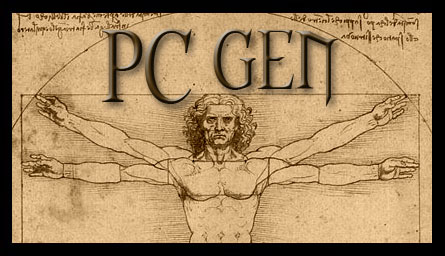

Whether you use pcgen.bat or pcgen.jar to start up PCGen, the first thing you will see is the splash screen with Da Vinci's Vitruvian Man logo and the words PCGen written above it.

From there, PCGen will load and take you to the Source Material Screen where you can get started making your characters!
With the release of PCGen 5.17.11 PCGen added a new Command Line Interface. The features are as follows:
Command Syntax: pcgen [-G] [-V] [-N] [-v] [-s <settings_dir>] [-m <campaign>] [-D [<character_sheet>]] [-E [<character_sheet>]] [-p <party_file>] [-c <character_file>]
Option (G): -G (Start in GMGen Mode)
Option (V): -V (Print Version and exit)
Option (N): -N (Start in NPC Generator Mode)
Option (v): -v (Set Logging Level to debug)
Option (s): -s <settings_dir> (Use alternate settings directory instead of the default)
Option (m): -m <campaign_mode> (Load Specified Campaign)
Option (D): -D <character_sheet> (Start in Character Sheet Mode. -c or -p must be included. Will use default character sheet if not specified.)
Option (E): -E <character_sheet> (Export character or party. -c or -p must be included. Will use default character sheet if not specified.)
Option (p): -p <party_file> (Loaded specified PCGen Party)
Option (c): -c <character_file> (Loaded specified PCGen Character)
What it does:
Except where noted, all options are optional.
Example:
pcgen -E outputsheets/d20/fantasy/pdf/csheet_fantasy_std_blue.xslt -c "characters/Test Bard.pcg"
Output the character characters/Test Bard.pcg to a PDF file using the csheet_fantasy_std_blue.xslt sheet.
pcgen -E outputsheets/d20/fantasy/htmlxml/psheet_fantasy_std_PFRPG.htm -p "characters/The Testers.pcp"
Output the listed party to html.
pcgen -v -m "Pathfinder RPG for Players - Advanced"
Startup with debug logging and load the Pathfinder RPG for Players - Advanced set.
As with the Standard Startup method, PCGen will load and take you to the Source Material Screen where you can get started making your characters!
It is recommended that before you start, you go into the Settings Menu and configure how you want everything to look, from the actual PCGen look and Feel (using skins), to the manner that the character name is to be shown on the character tabs, to your browser location! Setting all these configurations before you start making your character is highly recommended, as some setting will impact how your character is made, such as hit point rolling methods, starting gold and many other options!